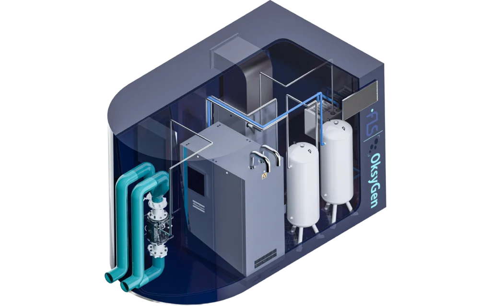

Oksygenanlegg
Spesialtilpassede oksygenanlegg, fra 10 til 20 000 kg oksygen per døgn.
Egenproduksjon av oksygen basert på PSA eller VPSA teknologi er den mest kostnadseffektive løsningen for oksygen til akvakultur. Produksjonsanlegg installert i kundens lokaler eller i container/kabinett tilknyttet fiskeproduksjonen, vil raskt spares inn, sammenlignet med løsninger som krever transport.
Ogtech tilbyr både løsninger basert på PSA og VPSA teknologi fra 10 – 20 000 kg oksygen pr. døgn. I våre applikasjoner bruker vi løsninger som er driftssikre og samtidig gir lave livsløpskostnader pr. produserte kg oksygen. Atlas Copcos patenterte teknologi og egne løsninger, gir oss fordeler sammenlignet med konkurrenter.
Våre systemer er tilpasset akvakultur. Løsningen kan tilbys med oksygenregulering og energigjenvinning. Alt etter kundens ønsker og behov.
